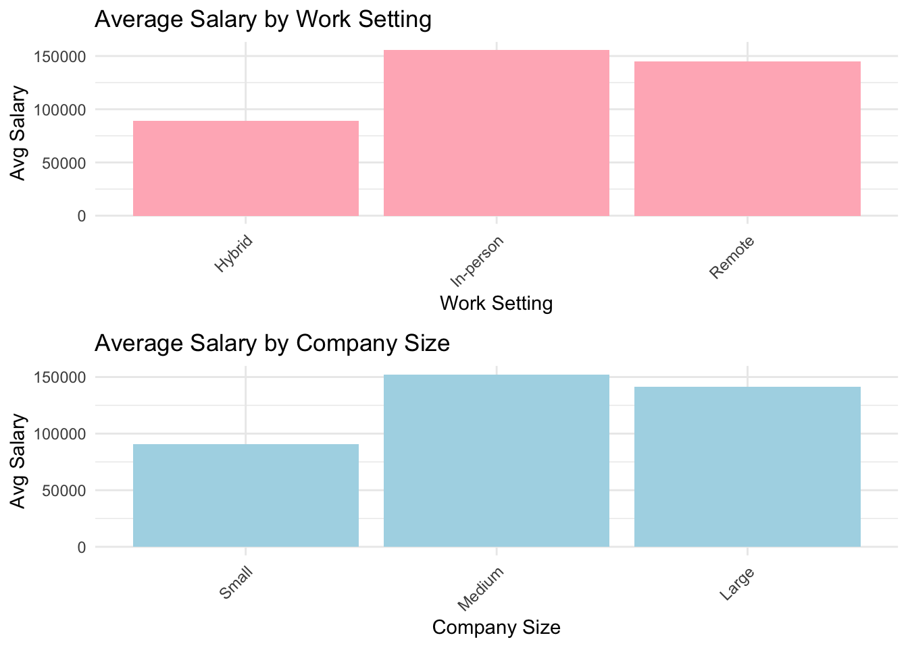
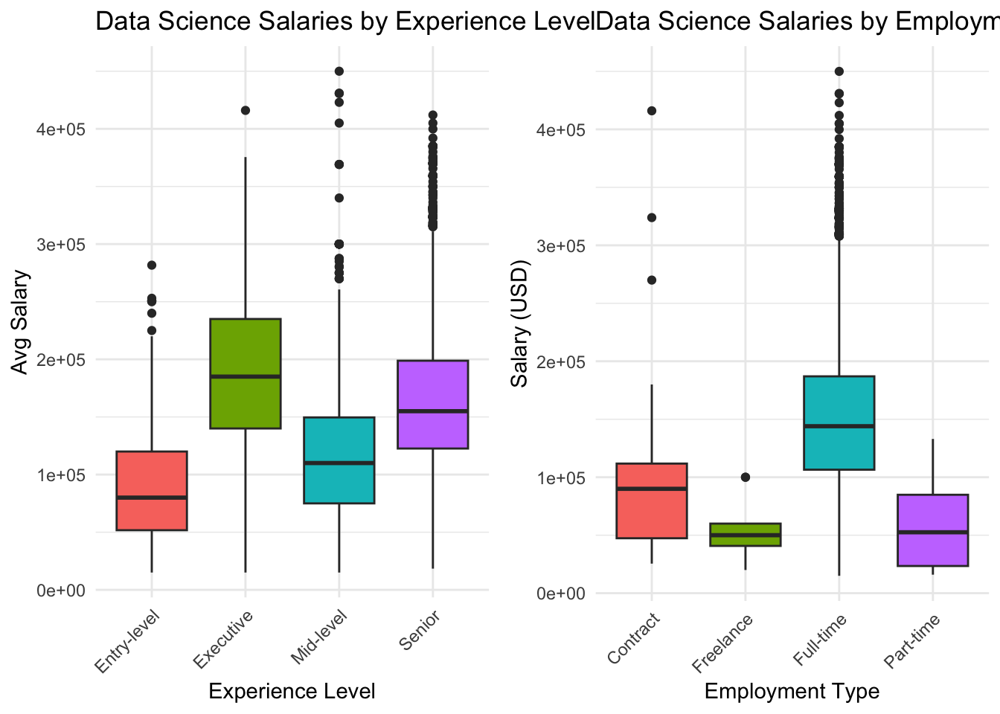
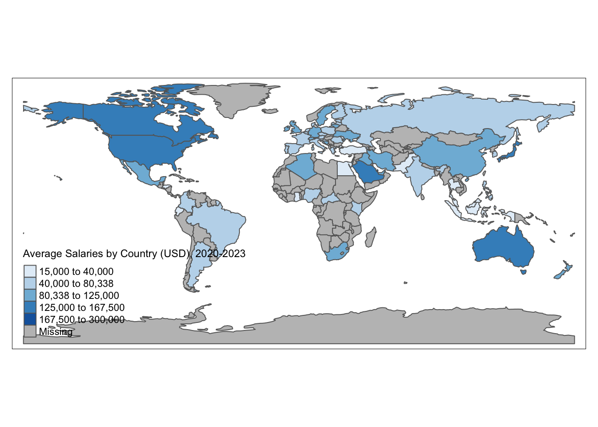
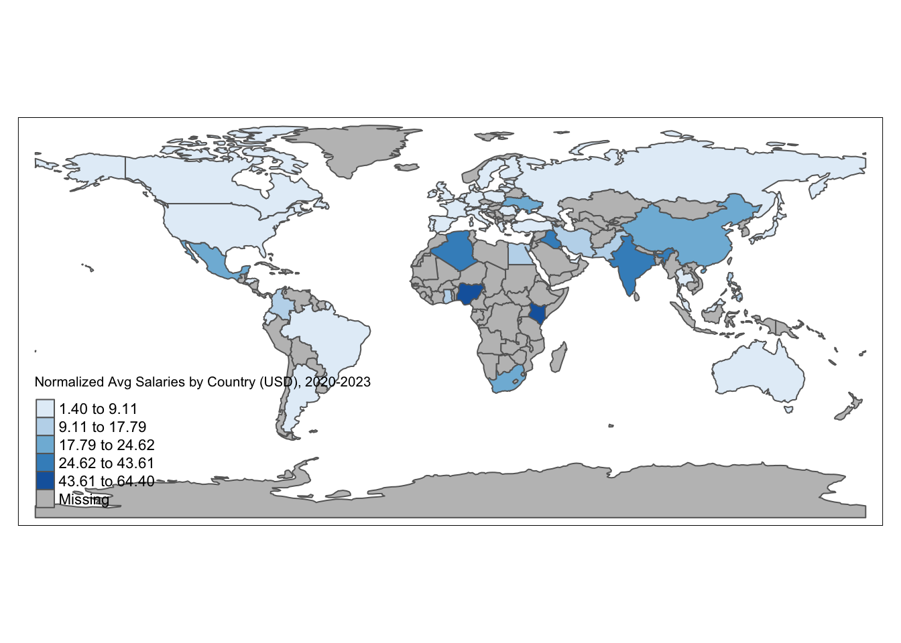

── Attaching packages ─────────────────────────────────────── tidyverse 1.3.2 ──
✔ ggplot2 3.4.4 ✔ purrr 1.0.2
✔ tibble 3.2.1 ✔ dplyr 1.1.4
✔ tidyr 1.2.1 ✔ stringr 1.4.1
✔ readr 2.1.2 ✔ forcats 0.5.2
── Conflicts ────────────────────────────────────────── tidyverse_conflicts() ──
✖ dplyr::filter() masks stats::filter()
✖ dplyr::lag() masks stats::lag()
Registered S3 method overwritten by 'mosaic':
method from
fortify.SpatialPolygonsDataFrame ggplot2
The 'mosaic' package masks several functions from core packages in order to add
additional features. The original behavior of these functions should not be affected by this.
Attaching package: 'mosaic'
The following object is masked from 'package:Matrix':
mean
The following objects are masked from 'package:dplyr':
count, do, tally
The following object is masked from 'package:purrr':
cross
The following object is masked from 'package:ggplot2':
stat
The following objects are masked from 'package:stats':
binom.test, cor, cor.test, cov, fivenum, IQR, median, prop.test,
quantile, sd, t.test, var
The following objects are masked from 'package:base':
max, mean, min, prod, range, sample, sumProject Write-up
A Look Into Salaries in Data Science
Introduction:
As different career paths fall in and out of demand, it is hard to know what is a worth while pursuit in today’s job market. We are all interested in careers in data science and we want be knowledgeable about the field as we prepare for graduation. We were especially curious about two things: - How do company-related factors influence the salary of workers in the field of data science?? - How do personal factors (like location, experience level, and employment type) influence the salary of workers in the field of data science? To answer these questions we first selected a data set titled “Jobs and Salaries in Data Science,” which originated from AI Jobs. Each observation represents one person in one year. Our dataset contains 9355 observations with 12 variables. The variables include information on salary, and explanatory variables such as company size, experience level, work setting, employment type, and year. There is also an extensive list of data science job titles.
The Effect of Company-Level Demands and Characteristics on Salary
Introduction:
In this section, we aim to answer the question ‘how do company-related factors (like job title, job category, work setting, and company size) influence the salary of workers in the field of data science?’ In order to get a complete understanding of data science salaries, it is important to disaggregate this data such that we are able to extract more specific insights. We decided looking at average salaries by job title, job category, work setting, and company size provide a useful glimpse into the relative value (in a strictly monetary sense) of certain jobs and certain company attributes. First, viewing salary by job title conveys important information about which specific jobs are in high demand (or low supply). Job category is useful in a similar way, as it provides a more zoomed-out view of the data science landscape. Since the COVID pandemic increased the need and acceptability of remote work, we thought it would be appropriate to investigate the differences in salary by work environment. Finally, company size provides a useful understand of how differently sized companies pay their data science employees.
Approach (1-2 paragraphs):
In order to provide clear insights about salary by company-level characteristics with minimal complexities and the primary intention of communicating the makeup of the data science field, we concluded that bar plots would make the most effective visualizations. The utility of bar plots is particularly handy for the scope of this project since many of the variables we are investigating in relation to salary are discrete, categorical variables. In particular, our first visualization, combines two bar plots: one relating to average salary by job title and the other relating to average salary by job category. As discussed briefly above, these plots convey similar information but with different levels of specificity, making the combined plot a reasonable glimpse at the sub-fields of data science. Our second visualization relates more to company characteristics than it does to fields/positions that are in demand by companies. Instead, this combined plot displays the relationship between work setting and company size, providing more environment-specific insights.
Analysis (2-3 code blocks, 2 figures, text/code comments as needed):
library(cowplot)
Attaching package: 'cowplot'The following object is masked from 'package:mosaic':
theme_map# store the number of each kind of job title
job_title_counts <- data_science %>%
count(job_title)
# filters out the jobs that appear fewer than 100 times
other_jobs <- job_title_counts %>%
filter(n < 100) %>%
pull(job_title)
# Assigns 'Other' to the jobs that appear fewer than 100 times
data_science_grouped <- data_science %>%
mutate(job_title_grouped = if_else(job_title %in% other_jobs, "Other", job_title))
# Plotting the average salary for each job title by year
plot6 <- ggplot(data = data_science_grouped, aes(x = job_title_grouped, y = salary_in_usd, fill = job_title_grouped)) +
geom_boxplot() +
theme_minimal() +
labs(title = "Data Science Salaries by Job Title",
x = "Job Title",
y = "Salary (USD)") +
theme(axis.text.x = element_text(angle = 45, hjust = 1), legend.position = "none")+
scale_y_continuous(labels = scales::label_comma())
job_category_counts <- data_science %>%
count(job_category)
other_jobs_C <- job_category_counts %>%
filter(n < 100) %>%
pull(job_category)
data_science_grouped_C <- data_science %>%
mutate(job_category_grouped_C = if_else(job_category %in% other_jobs_C, "Other", job_category))
plot7<- ggplot(data = data_science_grouped_C, aes(x = job_category_grouped_C, y = salary_in_usd, fill = job_category_grouped_C)) +
geom_boxplot() +
theme_minimal() +
labs(title = "Data Science Salaries by Job Category",
x = "Job Category",
y = "Salary (USD)") +
theme(axis.text.x = element_text(angle = 45, hjust = 1), legend.position = "none") +
scale_y_continuous(labels = scales::label_comma())
plot_grid(plot6,plot7)
library(cowplot)
# summary statistics of average salary by work setting
work_salary <- data_science %>%
group_by(work_setting) %>%
summarize(avg_salary = mean(salary_in_usd, na.rm = TRUE))
# summary statistics of average salary by company size
company_salary <- data_science %>%
group_by(company_size) %>%
summarize(avg_salary = mean(salary_in_usd, na.rm = TRUE))
# Plot 3: Average Salary by Work Setting
plot1 <- ggplot(data = data_science, aes(x = work_setting, y = salary_in_usd, fill = work_setting)) +
geom_violin() +
theme_minimal() +
labs(title = "Data Science Salaries by Work Setting",
x = "Work Setting",
y = "Salary (USD)") +
theme(axis.text.x = element_text(angle = 45, hjust = 1), legend.position = "none")+
scale_y_continuous(labels = scales::label_comma())
# Plot 4: Average Salary by Company Size
plot2 <- ggplot(data = data_science, aes(x = factor(company_size, levels = c("S", "M", "L")), y = salary_in_usd, fill = factor(company_size, levels = c("S", "M", "L")))) +
geom_violin() +
theme_minimal() +
labs(title = "Data Science Salaries by Company Size",
x = "Company Size",
y = "Salary (USD)") +
theme(axis.text.x = element_text(angle = 45, hjust = 1), legend.position = "none") +
scale_x_discrete(labels = c("S" = "Small", "M" = "Medium", "L" = "Large"))+
scale_y_continuous(labels = scales::label_comma())
# Arrange the plots in a grid
combined_plot <- plot_grid(plot1, plot2, ncol = 2)
# Print the combined plot
combined_plot
Discussion (1-3 paragraphs):
Investigating which aspects of a company impact salary led us to some compelling findings. We found that working in-person and at a medium sized company were both associated with a higher salary on average. Whereas working in a hybrid position and/or working at a small sized company were associated with lower salaries on average. We also noted that job categories and job titles do affect average salary. Positions in Machine Learning and AI along with Data Science Research were associated with the highest salaries on average, while positions under Data Science typically had lower salaries.
The Effect of Personal Characteristics on Salary
Introduction
In this section we aim to answer the question ‘how do personal factors (like company location, experience level, and employment type) influence the salary of workers in the field of data science?’ We believe that these variables provide a breadth of information about the landscape of data science salaries based on person factors. Let’s look at each of these variables individually. First, while one cannot immediately change their level of experience in a given field, it is useful to understand expected pay at different portions of one’s career. On the other hand, often people do have some say in their employment type and may decide to pursue certain employment types based on their average salaries. Next, the relationship between company location and salary is particularly interesting as data science is a relatively new field and requires a lot of technological infrastructure to perform. In addition, in many developing countries, there is likely not as high of a demand for data scientist. As such, we are interested in the differential pay between countries for similar jobs.
Approach
Similar to our approach for investigating company-level characteristics, since our variables are categorical, it is reasonable to provide bar plots to display relationships between these categorical variables are salary. In addition, since we are also interested in location, a map provides an intuitive understand of differences in pay between different countries. First, we decided to combine two bar plots: one displaying average salary by experience level and the other displaying average salary by employment type. Next, we analyze the effect of company location on average salary. Note that while we are analyzing company location and not country of origin, we believe that workers’ access to jobs usually depends on where they live, so that looking into company location still produces personal insights.
Analysis
library(cowplot)
# Plot 1: Average Salary by Experience Level
plot3 <- ggplot(data = data_science, aes(x = experience_level, y = salary_in_usd, fill = experience_level)) +
geom_boxplot() +
theme_minimal() +
labs(title = "Data Science Salaries by Experience Level",
x = "Experience Level",
y = "Avg Salary") +
theme(axis.text.x = element_text(angle = 45, hjust = 1), legend.position = "none")
# Plot 2: Average Salary by Employment Type
plot4 <- ggplot(data = data_science, aes(x = employment_type, y = salary_in_usd, fill = employment_type)) +
geom_boxplot() +
theme_minimal() +
labs(title = "Data Science Salaries by Employment Type",
x = "Employment Type",
y = "Salary (USD)") +
theme(axis.text.x = element_text(angle = 45, hjust = 1), legend.position = "none")
# Arrange the plots in a grid
combined_plot2 <- plot_grid(plot3, plot4, ncol = 2)
# Print the combined plot
combined_plot2
library(tmap)Breaking News: tmap 3.x is retiring. Please test v4, e.g. with
remotes::install_github('r-tmap/tmap')income <- read_csv(file = "data/median-income-by-country-2024.csv")Rows: 161 Columns: 5── Column specification ────────────────────────────────────────────────────────
Delimiter: ","
chr (2): country, medianIncomeByCountry_DataYear
dbl (3): medianIncomeByCountry_medianIncome, medianIncomeByCountry_meanIncom...
ℹ Use `spec()` to retrieve the full column specification for this data.
ℹ Specify the column types or set `show_col_types = FALSE` to quiet this message.avg_salary_by_country <- data_science %>%
group_by(company_location) %>%
summarize(avg_salary_in_usd = mean(salary_in_usd))
avg_salary_by_country <- avg_salary_by_country %>%
mutate(company_location = case_when(
company_location == "Czech Republic" ~ "Czech Rep.",
company_location == "South Korea" ~ "Korea",
company_location == "Central African Republic" ~ "Central African Rep.",
company_location == "Bosnia and Herzegovina" ~ "Bosnia and Herz.",
TRUE ~ company_location
))
data("World")
world_map <- merge(avg_salary_by_country, income, by.x = "company_location", by.y = "country", all.x = TRUE) %>% mutate(normalized = avg_salary_in_usd/medianIncomeByCountry_meanIncome)
world_map <- merge(World, world_map, by.x = "name", by.y = "company_location", all.x = TRUE)
tm_shape(world_map) +
tm_polygons(col = "avg_salary_in_usd", style = "jenks", palette = "Blues",
main.title = "Average Salaries of Data Scientists by Country, 2020-2023",
title = "Average Salaries by Country (USD), 2020-2023", legend.title = "Salary Range")
tm_shape(world_map) +
tm_polygons(col = "normalized", style = "jenks", palette = "Blues",
main.title = "Average Salaries of Data Scientists by Country, 2020-2023",
title = "Normalized Avg Salaries by Country (USD), 2020-2023", legend.title = "Salary Range")
Discussion
Our investigation was rendered more comprehensive with our subsequent analysis of personal factors which impact salary. Perhaps unsurprisingly, we found that average salary has a steadily increasing relationship with experience level. Entry level employees make under 100k on average, while executives made over 200k. The type of employment data scientists are contracted is also an important determining factor. Full-time workers had an average salary of 150k while freelance workers had an average salary of 50k. Additionally, the spacial analysis of salary by country also revealed that location matters. The United States, Canada, Saudi Arabia, Japan, and Australia had the highest annual salaries on average. Other countries such as Pakistan, Egypt, Indonesia, Turkey, and Ecuador had the lowest average salaries. However, after normalizing by each countries mean income, we can see that data scientists in Kenya and Nigeria make the most compared to the average person in each country respectively.